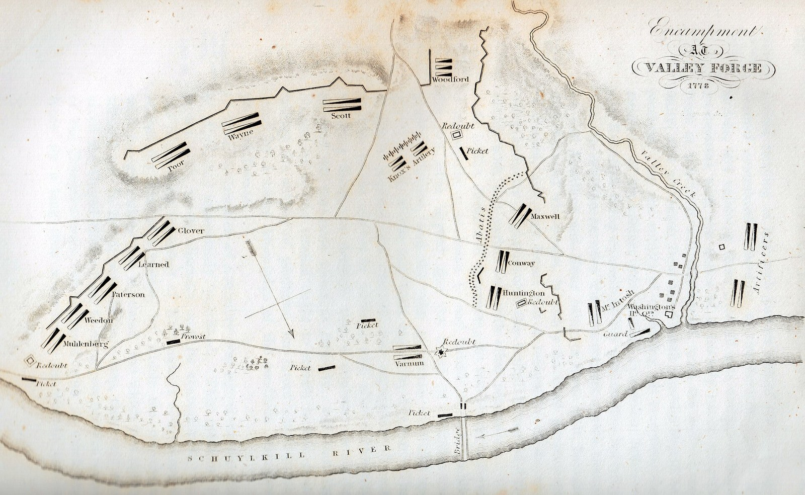

Directions: The five stations below are the record of the War for Independence, from Congress speaking to a tired country in May 1778 to the peace signed at Paris in September 1783. Study each station and answer its questions. At every station, state what the record contributed to the final result. In Part 2, rank the five contributions and defend your ranking.
Source: Continental Congress, Address of the Congress to the Inhabitants of the United States, May 9, 1778, as carried in the audited TPSP bank record (Gilder Lehrman Institute). The bank record's own cuts, marked [...] in the record, fall outside the passages quoted here.
"FRIENDS AND COUNTRYMEN, THREE years have now passed away, since the commencement of the present war."
"WE were then quite defenceless. Without arms, without ammunition, without cloathing, without ships, without money, without officers Skilled in war; with no other reliance but the bravery of our people, and the justice of our cause. We had to contend with a nation great in arts and in arms, whose fleets covered the ocean, whose banners had waved in triumph thro' every quarter of the globe."
"However unequal this contest our weakness was still farther increased by the enemies which America had nourished in her bosom. Thus exposed, on the one hand, to external force and internal divisions; on the other, to be compelled to drink of the bitter cup of slavery, and to go sorrowing all our lives long; in this sad alternative, we chose the former."
Congress printed this address as a broadside in the spring of 1778 and recommended that ministers read it in churches after services, at a moment when Britain was offering peace terms that met every American demand except independence itself.
List what Congress says the United States began the war without, and name the two reliances it says the country had instead. Then state the choice Congress describes in its closing image, and what Congress admits, in its own words, about enemies and divisions at home. What was this address itself trying to contribute to the war in May 1778, and why did the contribution have to be made in words, in churches, at that moment?
Source: Treaty of Alliance between the United States and France, February 6, 1778, Articles 1, 2, and 8, as transcribed by the Avalon Project, Yale Law School, from Treaties and Other International Acts of the United States of America, edited by Hunter Miller, Government Printing Office, 1931. Spelling follows the edition. Cuts are marked with ellipses.
Article 1: "... his Majesty and the said united States, shall make it a common cause, and aid each other mutually with their good Offices, their Counsels, and their forces, according to the exigence of Conjunctures as becomes good & faithful Allies."
Article 2: "The essential and direct End of the present defensive alliance is to maintain effectually the liberty, Sovereignty, and independance absolute and unlimited of the said united States, as well in Matters of Gouvernement as of commerce."
Article 8: "Neither of the two Parties shall conclude either Truce or Peace with Great Britain, without the formal consent of the other first obtain'd; and they mutually engage not to lay down their arms, until the Independence of the united states shall have been formally or tacitly assured by the Treaty or Treaties that shall terminate the War."
State the alliance's stated end in Article 2, in the treaty's own terms, and state the two promises the allies make each other in Articles 1 and 8. France was a monarchy aiding a rebellion against a king. From these articles alone, what did France bind itself to, and what did it get on paper in return within the articles quoted here? What did this treaty contribute that the American army could not supply for itself?
Source: Albigence Waldo, diary of a surgeon of the Connecticut Line at Valley Forge, entries of December 14 and December 21, 1777, as printed from the manuscript in the Pennsylvania Magazine of History and Biography and reproduced in the JSTOR Early Journal Content full text. Spelling follows the edition. The passage is printed without an outer quotation frame so that Waldo's own quotation marks stand as he wrote them. Cuts are marked with ellipses.
December 14. The Army which has been surprisingly healthy hitherto, now begins to grow sickly from the continued fatigues they have suffered this Campaign. Yet they still show a spirit of Alacrity & Contentment not to be expected from so young Troops.
December 21. Preparations made for hutts. Provisions Scarce. ... A general cry thro' the Camp this Evening among the Soldiers, "No Meat! No Meat!" ... What have you for your Dinners Boys? "Nothing but Fire Cake & Water, Sir."

State the two facts Waldo's December 14 entry holds together about the army's condition and its spirit, and state what the December 21 entry shows about the army's food, in the soldiers' own shouted words. Waldo was a surgeon writing for himself, not for Congress or for print. What does this record contribute to explaining the final result that no treaty or battle report at the other stations can supply?
Source: Daniel Morgan to Nathanael Greene, January 19, 1781, reporting the Battle of Cowpens of January 17, as transcribed by Founders Online, National Archives, from the copy enclosed in Greene to George Washington, January 24, 1781 (George Washington Papers). Spelling follows the edition. Cuts are marked with ellipses.
"The Troops I have the honor to command have gained a compleat Victory over a Detachment from the British Army commanded by Lt Colonel Tarlton. The Action happened on the 17th Instant about Sunrise at a Place called the Cow Pens near Pacolet River."
"Our Loss is very inconsiderable, not having more than 12 killed and 60 Wounded. The Enemys Loss was 10 Com. Officers killed, & upwards of 100 R. & File, 200 Wounded; 29 Com. Officers and more than 500 Privates Prisoners, which fall into our Hands with two field Pieces, two Standards, 800 Musquets, one travelling Forge, 35 Waggons, 70 Negros & upwards of 100 dragoon Horses and all their Musick. ... Altho' our Success was compleat, we fought only 800 Men & were opposed by upwards of 1000 chosen British Troops."
Set the two losses side by side as Morgan reports them, his own and the enemy's, killed, wounded, and taken, and state the odds he claims for the fight. Then look at his list of what fell into American hands. One entry in that list counts people among the captured property. State what that entry shows about how this army's paperwork treated Black people with the British force, in the record's own terms. What did Cowpens contribute to the final result, in the sequence the reading gives from Charleston to Yorktown?
Source: The Definitive Treaty of Peace, Paris, September 3, 1783, Articles 1, 4, 7, and 8, as transcribed by the Avalon Project, Yale Law School, from Treaties and Other International Acts of the United States of America, edited by Hunter Miller, Government Printing Office, 1931. Spelling follows the edition. Cuts are marked with ellipses.
Article 1: "His Brittanic Majesty acknowledges the said United States, viz., New Hampshire, Massachusetts Bay, Rhode Island and Providence Plantations, Connecticut, New York, New Jersey, Pennsylvania, Maryland, Virginia, North Carolina, South Carolina and Georgia, to be free sovereign and independent states, that he treats with them as such, and for himself, his heirs, and successors, relinquishes all claims to the government, propriety, and territorial rights of the same and every part thereof."
Article 4: "It is agreed that creditors on either side shall meet with no lawful impediment to the recovery of the full value in sterling money of all bona fide debts heretofore contracted."
Article 7: "All prisoners on both sides shall be set at liberty, and his Brittanic Majesty shall with all convenient speed, and without causing any destruction, or carrying away any Negroes or other property of the American inhabitants, withdraw all his armies, garrisons, and fleets from the said United States ..."
Article 8: "The navigation of the river Mississippi, from its source to the ocean, shall forever remain free and open to the subjects of Great Britain and the citizens of the United States."
State what Article 1 settles and what Articles 4, 7, and 8 each arrange. Article 7 orders the British withdrawal in language that counts enslaved people as property of the American inhabitants. State what that wording protected, and whose freedom it was written to deny. This treaty won no battle. State what it contributed to the final result that no victory, Yorktown included, could supply by itself.
The five stations, with the reading, are the evidence for your judgment of how this war was won. Rank first, then defend.
The sorting. Enter each station number under what it contributed, in one line each, with one quoted phrase or named figure from the station as the evidence. Station 3 and Station 4 are a diary and a letter, not public documents; cite their facts and their writers' words accordingly.
Your ranking. Rank the five contributions from greatest to least, and defend the ranking in a paragraph. Your first place must be defended against the station you rank second, and your ranking must use at least three stations' evidence, cited by number. A ranking that places the treaty last on the ground that it won no battle must say what the war would have lacked without it.
The strongest counterclaim. A classmate argues that one of the five won the war alone. Choose the strongest version of that claim, state it at full strength from the documents, and then answer it: what does the record at the other four stations show that the single cause cannot explain?
The lacks, the reliances, and the work of an address. Congress lists the lacks in one sentence: without arms, without ammunition, without cloathing, without ships, without money, without officers skilled in war. The two reliances are the bravery of our people and the justice of our cause. The closing image states the choice as one between external force and internal divisions on one side and, on the other, to drink of the bitter cup of slavery and go sorrowing all our lives long; in this sad alternative, we chose the former, meaning the war. Congress admits in its own words that the contest was weakened by the enemies which America had nourished in her bosom and by internal divisions, the Loyalist and wavering presence inside the country. The address's contribution was endurance organized as persuasion. In May 1778 Britain was offering terms that met every demand except independence, and a war-weary country had to be held to the harder demand by argument, read aloud in churches because churches were the country's broadcast network. An army in being, Washington's strategy in the reading, required a country in being behind it, and this document is that requirement being worked on directly.
The end stated, the promises made, and the contribution. Article 2 states the end: to maintain effectually the liberty, Sovereignty, and independance absolute and unlimited of the said united States, in government and in commerce. Article 1 promises a common cause, each side aiding the other with good offices, counsels, and forces. Article 8 promises that neither side will make a separate truce or peace without the other's formal consent, and that neither will lay down its arms until American independence is assured by the treaty ending the war. Within the articles quoted, France receives no territory and no payment; on paper it binds itself to an American end, and its return, the weakening of Britain and the recovery of standing lost in 1763, lies outside the quoted text and should be named as inference if students raise it. The contribution the army could not supply itself was scale: French money, ships, and soldiers, a second front against Britain worldwide after Spain followed in 1779, and, in 1781, the fleet that sealed the Chesapeake. Saratoga in the reading is the proof that purchased this treaty, which is why the two belong to one sequence in any ranking.
The condition, the spirit, and the food. December 14 holds together an army beginning to grow sickly from the continued fatigues of the campaign and troops who still show a spirit of Alacrity and Contentment not to be expected from so young Troops, in Waldo's spelling as the edition prints it. December 21 shows provisions scarce, huts still being prepared, a general cry through the camp of No Meat, No Meat, and dinner and supper answered as Nothing but Fire Cake and Water, Sir. Fire cake was flour and water baked on a stone or in ashes, a ration that kept men alive without feeding them. The contribution no treaty or battle report can supply is the mechanism of survival itself, seen at ground level: the army did not dissolve in the winter when dissolution was available to every man who walked home, and the same winter's drilling under Steuben, in the reading, converted the men who stayed into a professional force. Students should be held to the source's limits as well. Waldo is one surgeon in one brigade, writing for himself, and his diary proves conditions and endurance in his camp, not in every camp.
The losses, the odds, the list, and the sequence. Morgan reports his own loss as very inconsiderable, not having more than 12 killed and 60 wounded. The enemy's loss as quoted: 10 commissioned officers killed and upwards of 100 rank and file, 200 wounded, 29 commissioned officers and more than 500 privates taken prisoner, with two field pieces, two standards, 800 muskets, a travelling forge, 35 wagons, and upwards of 100 dragoon horses. The odds he claims: we fought only 800 Men and were opposed by upwards of 1000 chosen British Troops. The list's human entry, 70 Negros, counts seventy Black people among the captured property, between the wagons and the horses. In the report's own terms they are spoils. The historical reading students should state plainly is that Black people traveling with Tarleton's force, laborers, servants, and enslaved people among them, were treated in this army's paperwork as goods to be inventoried, and the next lesson takes up Black Americans' war, on both sides, whole. Cowpens' place in the sequence: after Charleston in May 1780 and Camden that August had destroyed two American armies, King's Mountain and then Cowpens destroyed the Loyalist and legion strength the British southern strategy rested on, and Greene's wearing campaign then drove Cornwallis out of the Carolinas into the Virginia position where the Yorktown trap could close.
The recognition, the arrangements, and the treaty's own contribution. Article 1 settles the war's question: the king acknowledges the thirteen named states to be free sovereign and independent states, treats with them as such, and relinquishes all claims to their government, propriety, and territorial rights for himself, his heirs, and successors. Article 4 arranges debts: creditors on either side are to meet no lawful impediment to recovering the full sterling value of bona fide debts. Article 7 arranges the ending of the war itself: prisoners freed, and the British armies, garrisons, and fleets withdrawn with all convenient speed. Article 8 opens the Mississippi's navigation forever to British subjects and American citizens. The Article 7 wording on carrying away Negroes or other property protected American slaveholders' claims to enslaved people as property, and it was written to deny the freedom of the Black Loyalists who had reached British lines on British promises, thousands of whom the British nevertheless evacuated, the story the next lesson carries. The treaty's contribution: a victory is a fact on a field for a season; the treaty converted Yorktown into a recognized country with a boundary at the Mississippi and the Great Lakes, in the reading's terms, which no army could sign for itself. Its uneven terms on debts and Loyalist property, honored unevenly by the states in the reading's closing line, are also the seed of the next two lessons.
Full credit should be awarded if the ranking:
Teacher note on the rankings. The most common failure is a ranking of dramas rather than contributions, in which the diary's suffering or the surrender's ceremony outranks the documents that changed what either side could do next. Station 1 exists to prevent that reading: the war's least military document, an address read in churches, is in the file because holding the country to independence in May 1778 was a military necessity performed in words. The second failure is passing over the human entries in Stations 4 and 5 in silence. Both records count Black people as property in their own period wording, quoted as written, and a ranking discussion that never names that fact has not read the file it was given.